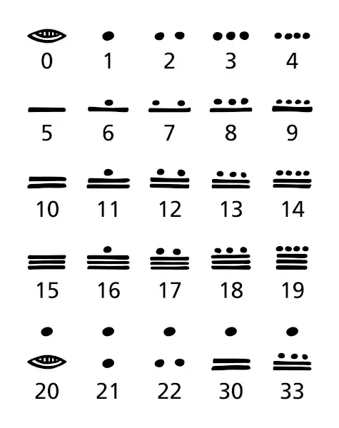
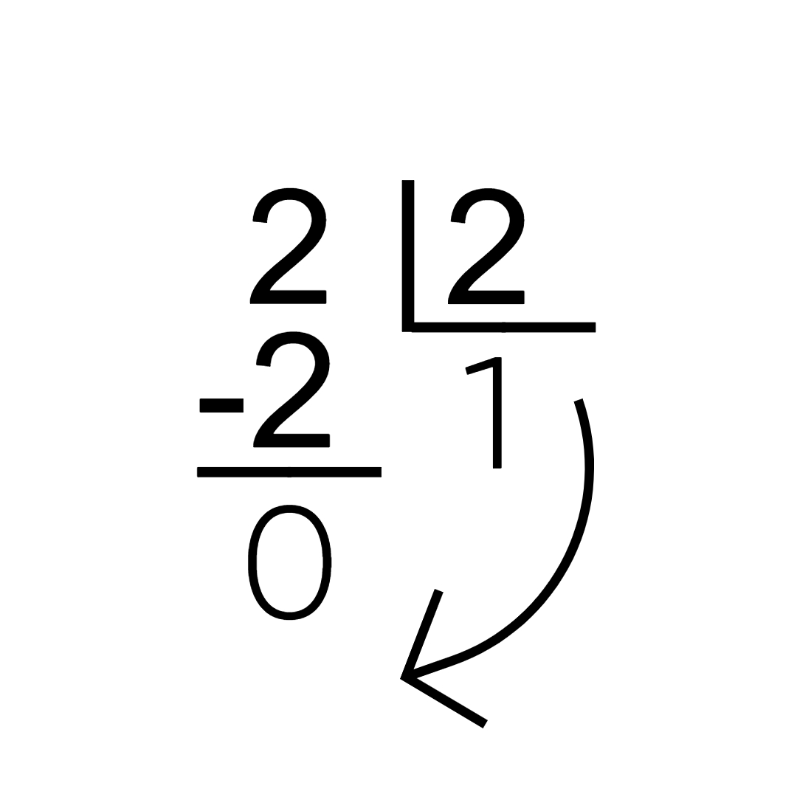
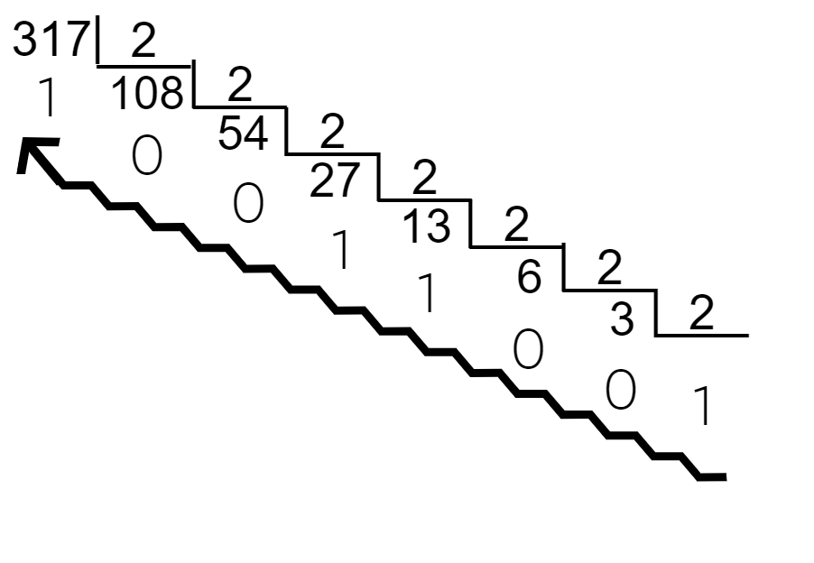
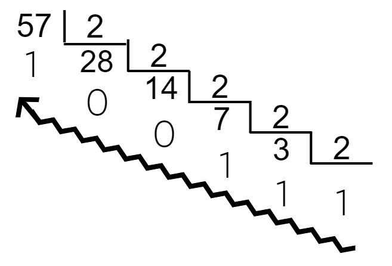
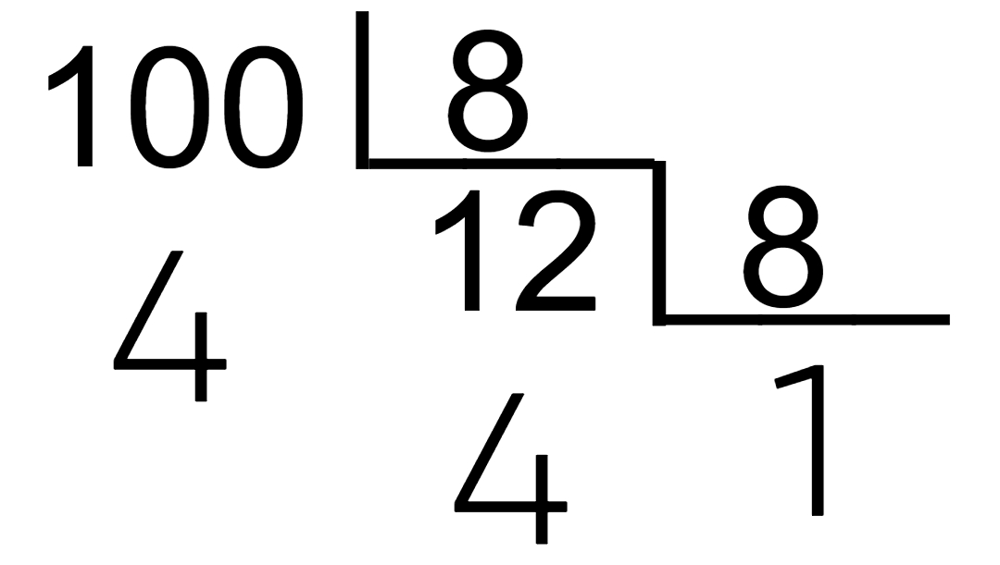
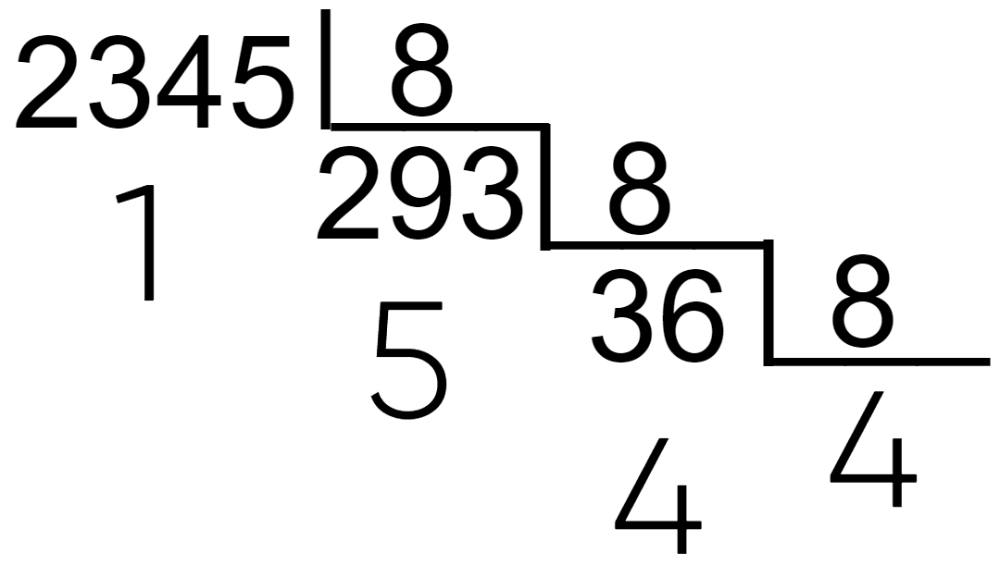
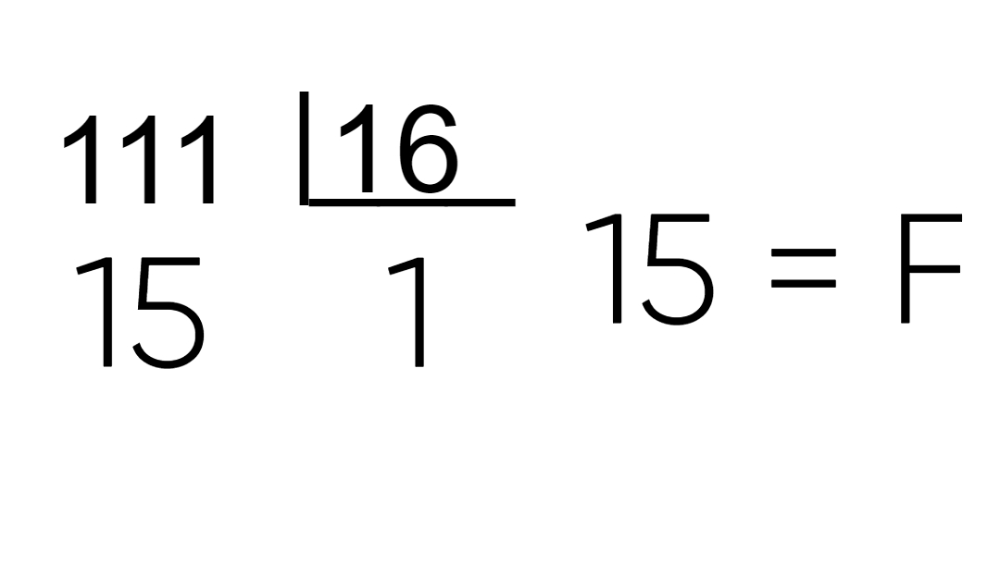
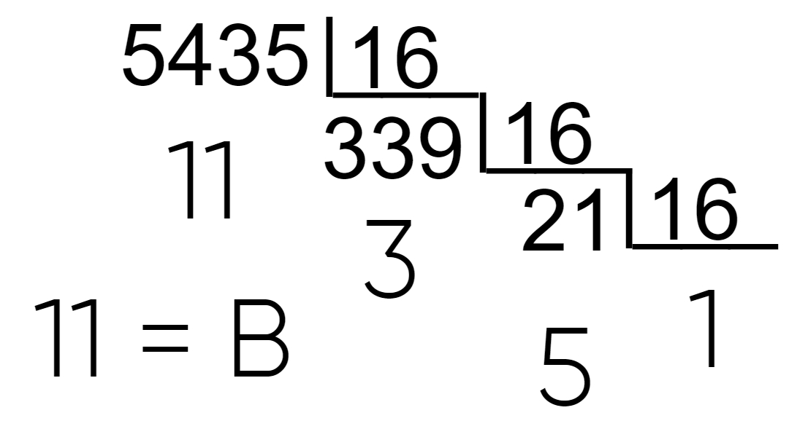

As bases numéricas servem para organizar a contagem e a matemática de uma sociedade. Em diferentes lugares e em diferentes tempos, as pessoas utilizam sistemas de numeração e bases de numeração diferentes. Por exemplo, a sociedade maia utiliza um sistema de base vigesimal, ou seja, possui 20 digitos.
|  |
A base numérica que é mais utilizada é a base decimal (a que nós utilizamos), justamente pelo fato de haverem 10 dedos nas mãos. E é esse mesmo motivo que leva às outras bases, temos 5 dedos em uma mão/um pé (base quinta/ 5) e temos 20 dedos ao total (base vigesimal/ 20). Nós utilizamos um número pequenino embaixo do valor que estamos trabalhando para representar a base do número. Ex.: (10)10 mostra que o número 10 está em um valor decimal.
O uso das diferentes bases numéricas são de grande importância para qualquer pessoa que trabalha com Informática, pois utilizamos diferentes bases para realizarmos trabalhos como armazenamento de informações dentro de bits, escrita de código e expressões Booleanas. A base Binária é a mais simple e a melhor para trabalhar com expressões Booleanas, a base Octal possui as funções da Binária em um nível de complexidade elevado e a base Hexadecimal é a melhor para guardar uma quantidade elevada de informações (o sistema de cor rgb, por exemplo).
A base binária, como o nome já diz, é um sistema de dois digitos, 0 e 1. Essa base é utilizada para realizarmos expressões Booleanas. Cada casa de unidade do sistema binário é uma potência de 2, do mesmo modo que cada casa de unidade do sistama decimal é uma potência de 10.
| ....Unidade de Milhão | Centena de Milhar | Dezena de Milhar | Unidade de Milhar | Centena | Dezena | Unidade | ||
|---|---|---|---|---|---|---|---|---|
| (Base Decimal)10 | Potenciação | ....106 | 105 | 104 | 103 | 102 | 101 | 100 |
| Número | ....1000000 | 100000 | 10000 | 1000 | 100 | 10 | 1 | |
| (Base Binária)10 | Potenciação | ....26 | 25 | 24 | 23 | 22 | 21 | 20 |
| Número | ....64 | 32 | 16 | 8 | 4 | 2 | 1 | |
| (Base Binária)2 | Potenciação | ....106 | 105 | 104 | 103 | 102 | 101 | 100 |
| Número | ....1000000 | 100000 | 10000 | 1000 | 100 | 10 | 1 | |
Quando trabalhamos com uma base numérica (N)10, (10)N = (N)10. Por exemplo, (10)2 = (2)10. Dessa maneira, podemos entender que as casas de unidades x (10x) na base binária são iguais a (2x)10. Então podemos começar a entender como converter números binários para números decimais
Pegue, por exemplo, o número (100101)2, com este número, e com qualquer outro número da base 2, podemos pegar cada respectivo número "1" e "0" e múltiplicá-los por sua respectiva casa de unidade, 2x. Se fizermos isto na base 2, o número voltará ao 'normal', 1 * 105 + 1 * 102 + 1 * 100; já se fizermos essa equação na base 10, teremos a conversão 'correta' 1 * 25 + 1 * 22 + 1 * 20 = 32 + 4 + 1 = (37)10
Alguns outros exemplos finais:
| Binário | Decimal |
|---|---|
| 1010 → | 23 + 21 = 10 |
| 111000 → | 25 + 24 + 23 = 56 |
| 1000000001 → | 29 + 20 = 513 |
| 111111111111111 → | 215 - 1 = 32.767 |
Agora, já sabemos como converter um número binário para decimal, mas e se precisarmos fazer o contrário?
Se a conversão de binário para decimal é, em grande parte, multiplicação, a conversão inversa deve ser sobre múltiplas divisões.
Para convertermos, por exemplo, o número (2)10 para a base binária, devemos fazer divisões consecutivas por 2, coletar todos os restos e organizá-los do último para o primeiro.
|  |  |  | |||||||||||||||||||||||||||||||||||||
| ↓ ↓ ↓ | |||||||||||||||||||||||||||||||||||||||
| (10)2 | (10011001)2 | (111001)2 | |||||||||||||||||||||||||||||||||||||
Agora, já temos um entendimento sobre a base Binária, entender as outras duas será mais fácil, já que todas partem das mesmas ideias. Na base Octal, o número 10 representa (8)10; e na base Hexadecimal, o número 10 representa (16)10.
Para a conversão dos números Octais e Hexadecimais para os Decimais, você também usa as potências de 8 e 16, mas dessa vez você precisa multiplicar cada número das unidades por seu respectivo algarismo. A conversão direta de um modo simples e rápido das bases Hexadecimal e Octal é possível, então farei uma tabela com as três bases para termos uma compreensão e uma comparação entre o valor de cada uma.
| Binária | Octal | Decimal | Hexadecimal |
|---|---|---|---|
| 000001 | 1 | 1 | 1 |
| 000010 | 2 | 2 | 2 |
| 000011 | 3 | 3 | 3 |
| 000100 | 4 | 4 | 4 |
| 000101 | 5 | 5 | 5 |
| 000110 | 6 | 6 | 6 |
| 000111 | 7 | 7 | 7 |
| 001000 | 10 | 8 | 8 |
| 001001 | 11 | 9 | 9 |
| 001010 | 12 | 10 | A |
| 001011 | 13 | 11 | B |
| 001100 | 14 | 12 | C |
| 001101 | 15 | 13 | D |
| 001110 | 16 | 14 | E |
| 001111 | 17 | 15 | F |
| 010000 | 20 | 16 | 10 |
| 010001 | 21 | 17 | 11 |
| 010010 | 22 | 18 | 12 |
| 010011 | 23 | 19 | 13 |
| 010100 | 24 | 20 | 14 |
| 010101 | 25 | 21 | 15 |
| 010110 | 26 | 22 | 16 |
| 010111 | 27 | 23 | 17 |
| 011000 | 30 | 24 | 18 |
| 011001 | 31 | 25 | 19 |
| 011010 | 32 | 26 | 1A |
| 011011 | 33 | 27 | 1B |
| 011100 | 34 | 28 | 1C |
| 011101 | 35 | 29 | 1D |
| 011110 | 36 | 30 | 1E |
| 011111 | 37 | 31 | 1F |
| 100000 | 40 | 32 | 20 |
| 100001 | 41 | 33 | 21 |
| 100010 | 42 | 34 | 22 |
| 100011 | 43 | 35 | 23 |
| 100100 | 44 | 36 | 24 |
| 100101 | 45 | 37 | 25 |
| 100110 | 46 | 38 | 26 |
| 100111 | 47 | 39 | 27 |
| 101000 | 50 | 40 | 28 |
| 101001 | 51 | 41 | 29 |
| 101010 | 52 | 42 | 2A |
| 101011 | 53 | 43 | 2B |
Analisando a tabela, podemos perceber um padrão entre a base Binária e as bases Hexadecimal e Octal. A base Octal é formada por números de (0 - 7)10, que são os trios de números de (000 - 111)2; a base Hexadecimal é formada por números de (0 - 15)10, em que números de 10 acima são representados por uma letra, mas também é representada dos números (0000 - 1111)2. Ou seja, as bases Hexadecimal e Octal são formados por quartetos e trios de números Binários, respectivamente. Então, a maneira mais fácil e simples, em minha opinião, para converter essas bases para decimal é primeiro convertê-las em binário e depois converter de binário para decimal. Reveja a tabela para ter uma ideia mais clara.
Agora que entendemos a maneira fácil de converter essas bases para decimal, vamos entender a maneira mais direta.
Do mesmo modo que convertemos a base Binária com potências de 2, nós convertemos as bases Octal e Hexadecimal com as potências de 8 e 16. A diferença é que, para a base Binária, existem apenas 1 e 0, então você apenas soma ou não soma, mas para as outras bases, você precisa multiplicar o algarismo de tal casa de unidade por sua potência para apenas depois somar tudo. (001|010)2 ← (12)8 → (base 10) 1 * 81 2 * 80 = 8 + 2 = 10; (011|111|010)2 ← (372)8 → (base 10) 3 * 82 + 7 * 81 + 2 * 80 = 192 + 56 + 2 = 250. A conversão do Hexadecimal é um pouco diferente, já que nele também temos as letras que valem de 10 a 15, mas tudo que precisamos fazer é trocar cada letra por seu respectivo valor. (0001|1100)2 ← (1D)16 → (base 10) 1 * 161 + 13 * 160 = 16 + 13 = 29; (0100|1110|1001) ← (4E9)16 → (base 10) 4 * 162 + 14 * 161 + 9 * 160 = 1024 + 224 + 9 = 1257.
E, novamente, para convertermos a base decimal para hexadecimal e octal, precisamos seguir as mesmas regras da conversão de decimal para binária, com a diferença de precisar multiplicar os valores dos algarismos por sua unidade e transformar os valores de 10 a 15 em letras para a base hexadecimal.
|  |  |  |  |
| ↓ ↓ ↓ ↓ | |||
| (144)8 | (4451)8 | (1F)16 | (153B)16 |